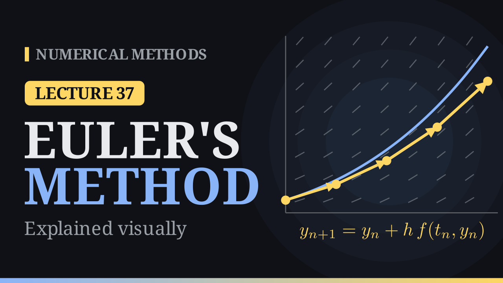

Lecture 37
Euler's Method¶

Key results¶
- Euler's method for \(y'=f(t,y)\), \(y(t_0)=y_0\): \(y_{n+1}=y_n+h\,f(t_n,y_n)\), \(t_{n+1}=t_n+h\). It follows the tangent for one step, then repeats; each step costs one evaluation of \(f\).
- Three derivations: the tangent line, the Taylor series \(y(t_n+h)=y(t_n)+h\,y'(t_n)+\frac{h^2}{2}y''(\xi)\) cut after the \(h\) term, and the left rectangle rule for \(\int_{t_n}^{t_{n+1}}f\big(t,y(t)\big)\,dt\).
- Errors: the local truncation error is \(\frac{h^2}{2}y''(\xi)=O(h^2)\); over \(N=\frac1h\) steps the errors add up to a global error \(O(h)\). Halving \(h\) halves the error.
- Error bound: \(|y(t_n)-y_n|\le\frac{Mh}{2L}\big(e^{L(t_n-t_0)}-1\big)\) when \(f\) is Lipschitz in \(y\) with constant \(L\) and \(|y''|\le M\).
- Stability: on \(y'=\lambda y\), \(y_n=(1+h\lambda)^ny_0\); for real \(\lambda<0\) Euler is stable only for \(-2\le h\lambda\le0\), that is \(h\le\frac{2}{|\lambda|}\).
- For \(y'=t+y\), \(y(0)=1\), \(h=0.1\): \(y_{10}=3.18748\) against \(y(1)=3.43656\), error \(0.249\).
The idea¶
An initial value problem \(y'=f(t,y)\), \(y(t_0)=y_0\) gives the slope of the solution at every point of the plane: the direction field. We cannot follow the solution curve, because we do not know it, but we can follow its tangent. Start at \((t_0,y_0)\), walk a step \(h\) along the slope \(f(t_0,y_0)\), read a new slope at the new point and walk again. The computed points \((t_n,y_n)\), \(t_n=t_0+nh\), form a polygon. Each step starts on a slightly different solution curve, so the polygon slowly drifts away from the true solution.
Three derivations¶
Tangent line. The tangent to the solution at \(t_n\) has slope \(y'(t_n)=f(t_n,y_n)\). Moving a horizontal distance \(h\) along it raises \(y\) by \(h\) times the slope:
The right-hand side is known, so the method is explicit.
Taylor series. For some \(\xi\in(t_n,t_{n+1})\),
Replacing \(y'\) by \(f\) and dropping the last term gives Euler's method: it is the Taylor method of order \(1\). The dropped term \(\frac{h^2}{2}y''(\xi)\) is the error of one step. Keeping more terms gives the Taylor series methods of the next lecture.
Integration. Integrating \(y'=f\) over one step gives exactly
Since \(y(t)\) is unknown inside the step, approximate the integral by the left rectangle rule, \(h\,f(t_n,y_n)\). The rectangle rule is first order, and so is Euler's method; better quadrature rules lead to better methods (Runge–Kutta).
Worked example¶
Solve \(y'=t+y\), \(y(0)=1\) with \(h=0.1\) up to \(t=1\). The exact solution is \(y=2e^t-t-1\).
- \(f(0,1)=1\), so \(y_1=1+0.1\cdot1=1.1\).
- \(f(0.1,1.1)=1.2\), so \(y_2=1.1+0.1\cdot1.2=1.22\).
- \(f(0.2,1.22)=1.42\), so \(y_3=1.22+0.1\cdot1.42=1.362\).
| \(n\) | \(t_n\) | \(y_n\) | \(y(t_n)\) | \(\lvert y(t_n)-y_n\rvert\) |
|---|---|---|---|---|
| 0 | 0.0 | 1.00000 | 1.00000 | 0.00000 |
| 1 | 0.1 | 1.10000 | 1.11034 | 0.01034 |
| 2 | 0.2 | 1.22000 | 1.24281 | 0.02281 |
| 3 | 0.3 | 1.36200 | 1.39972 | 0.03772 |
| 4 | 0.4 | 1.52820 | 1.58365 | 0.05545 |
| 5 | 0.5 | 1.72102 | 1.79744 | 0.07642 |
| 6 | 0.6 | 1.94312 | 2.04424 | 0.10112 |
| 7 | 0.7 | 2.19743 | 2.32751 | 0.13007 |
| 8 | 0.8 | 2.48718 | 2.65108 | 0.16390 |
| 9 | 0.9 | 2.81590 | 3.01921 | 0.20331 |
| 10 | 1.0 | 3.18748 | 3.43656 | 0.24908 |
The exact solution is convex, so every tangent step lands below the curve, and from the lower point the slope \(t+y\) is smaller as well: the gap keeps opening. With \(h=0.2\) Euler gives \(2.97664\) at \(t=1\), an error of \(0.46\).
Local and global error¶
The local truncation error is the error of one step started on the exact solution:
In the example \(y''=2e^t\), so the first local error lies between \(0.01\) and \(0.01105\); its true value is \(1.11034-1.1=0.01034\). With \(h=0.05\) it is \(0.00254\), four times smaller.
The global error at a fixed time is different. Every step makes a fresh local error and moves the computation onto a new solution curve; the exact solutions through the Euler points form a fan that spreads out as \(t\) grows. In the example each local error is carried to \(t=1\) with the factor \(e^{1-t_{n+1}}\), every carried error is about \(0.025\), and the ten of them add up to exactly \(0.249\). In general \(\frac1h\) steps of size \(O(h^2)\) give a global error \(O(h)\): Euler's method is first order.
| \(h\) | error at \(t=1\) | error \(/\,h\) |
|---|---|---|
| 0.1 | 0.24908 | 2.491 |
| 0.05 | 0.12997 | 2.599 |
| 0.025 | 0.06644 | 2.657 |
| 0.0125 | 0.03359 | 2.688 |
Halving \(h\) halves the error; on a log-log plot the errors lie on a line of slope \(1\) (the local errors on a line of slope \(2\)). The ratio settles near \(e\approx2.718\), so the error is about \(e\,h\): an error of \(10^{-3}\) needs about \(2700\) steps, and \(10^{-6}\) about \(2.7\) million. Each extra digit costs ten times the work.
Error bound. If \(f\) is Lipschitz in \(y\) with constant \(L\) and \(|y''|\le M\), then
For the example \(L=\big|\frac{\partial f}{\partial y}\big|=1\) and \(M=2e\) on \([0,1]\), so with \(h=0.1\) the bound at \(t=1\) is \(0.467\), against the true error \(0.249\). The bound is proportional to \(h\) but grows exponentially with the length of the interval.
Stability¶
On the test equation \(y'=\lambda y\) with \(\lambda<0\), whose solution \(y_0e^{\lambda t}\) decays,
The values decay only if \(|1+h\lambda|\le1\). For real \(\lambda<0\) this means \(-2\le h\lambda\le0\), that is \(h\le\frac{2}{|\lambda|}\); for complex \(\lambda\) the stable values of \(h\lambda\) fill the disk \(|1+h\lambda|\le1\) of radius \(1\) centred at \(-1\).
For \(y'=-50y\), \(y(0)=1\): with \(h=0.01\) the factor is \(0.5\) (smooth decay), with \(h=0.03\) it is \(-0.5\) (the values flip sign but decay), and with \(h=0.05\) it is \(-1.5\):
| \(t_n\) | 0.05 | 0.10 | 0.15 | 0.20 |
|---|---|---|---|---|
| Euler, \(h=0.05\) | \(-1.5\) | \(2.25\) | \(-3.375\) | \(5.0625\) |
| \(e^{-50t_n}\) | \(0.0821\) | \(0.00674\) | \(0.00055\) | \(0.00005\) |
The computed values oscillate and blow up although the exact solution decays. Here stability needs \(h<0.04\). Problems where a very negative \(\lambda\) forces such small steps, although the solution itself is smooth, are called stiff.
Systems¶
For a system \(\mathbf y'=\mathbf f(t,\mathbf y)\) the method is unchanged: \(\mathbf y_{n+1}=\mathbf y_n+h\,\mathbf f(t_n,\mathbf y_n)\). The pendulum \(\theta''=-\sin\theta\) becomes \(\theta'=\omega\), \(\omega'=-\sin\theta\). From \(\theta_0=1\), \(\omega_0=0\) with \(h=0.1\):
| \(n\) | \(\theta_n\) | \(\omega_n\) |
|---|---|---|
| 0 | 1 | 0 |
| 1 | 1 | \(-0.0841\) |
| 2 | 0.9916 | \(-0.1683\) |
The exact pendulum moves on a closed curve in the \((\theta,\omega)\) plane and swings between \(\pm1\) radian forever. Euler's points spiral outward: by \(t=10\) the pendulum swings out to \(1.43\) radians (about \(82^\circ\) instead of \(57^\circ\)). Euler adds energy.
The outward spiral. For \(y''=-y\), written as \(y'=v\), \(v'=-y\) with \(y(0)=1\), \(v(0)=0\), the exact solution \((\cos t,-\sin t)\) runs around the unit circle. One Euler step moves along the tangent, which leaves the circle on the outside:
With \(h=0.1\) one turn takes \(63\) steps and \(y^2+v^2\) grows by a factor \(1.87\) (radius \(1.37\)); with \(h=0.2\), by \(3.37\) in \(31\) steps. Smaller steps slow the spiral down but never close the orbit.
Algorithm (Euler's method)¶
- Input \(f\), \(t_0\), \(y_0\), the step \(h\) and the number of steps \(N\).
- For \(n=0,1,\dots,N-1\): compute the slope \(s=f(t_n,y_n)\), set \(y_{n+1}=y_n+h\,s\) and \(t_{n+1}=t_n+h\).
- Return \(y_1,\dots,y_N\).
Each step costs one evaluation of \(f\); for a system, \(y\) and \(f\) are vectors.
Comparison¶
Euler's method is simple, explicit, cheap per step and works for any system. But it is only first order, it is unstable when \(h\lambda\) leaves \([-2,0]\), and it adds energy to oscillations. The second-order Taylor method on the same problem, \(y'=t+y\), \(y(0)=1\):
| \(h\) | Euler error at \(t=1\) | Taylor-2 error at \(t=1\) |
|---|---|---|
| 0.1 | 0.24908 | \(8.40\times10^{-3}\) |
| 0.05 | 0.12997 | \(2.18\times10^{-3}\) |
| 0.025 | 0.06644 | \(5.56\times10^{-4}\) |
| 0.0125 | 0.03359 | \(1.40\times10^{-4}\) |
With the same \(h=0.1\) the Taylor method is about \(30\) times more accurate, and halving \(h\) divides its error by \(4\) instead of \(2\). Next lecture: Taylor series methods keep more terms of the Taylor series, \(y_{n+1}=y_n+h\,y_n'+\frac{h^2}{2}y_n''+\cdots\), and reach order two, three and higher.